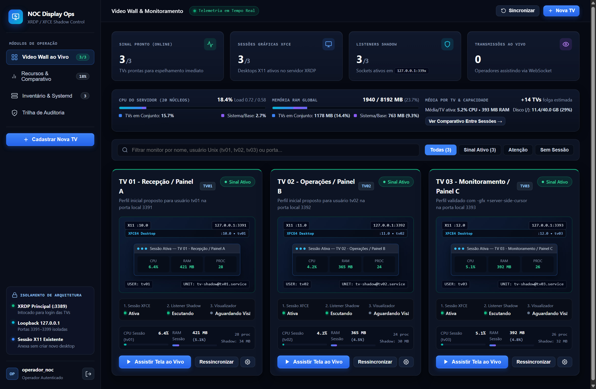
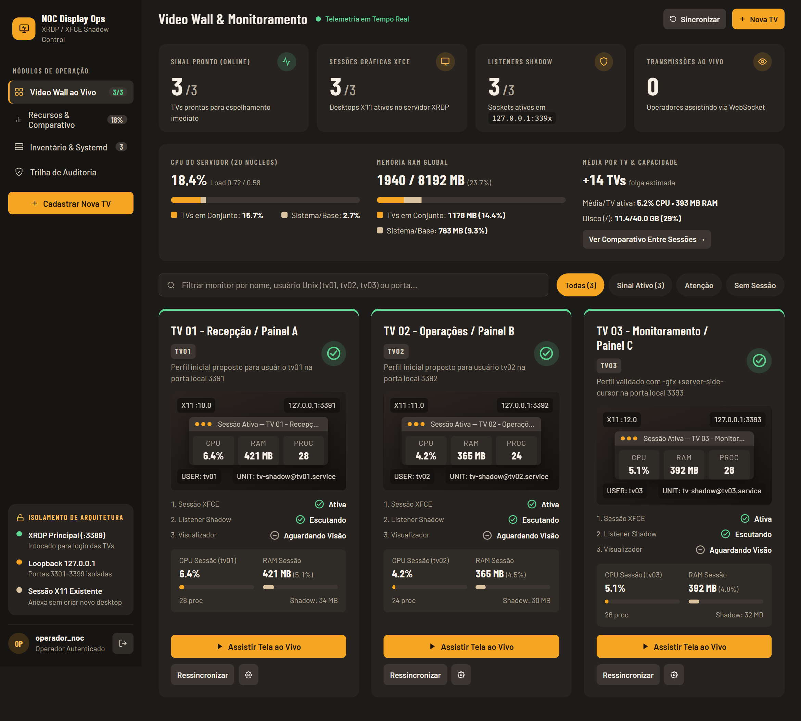
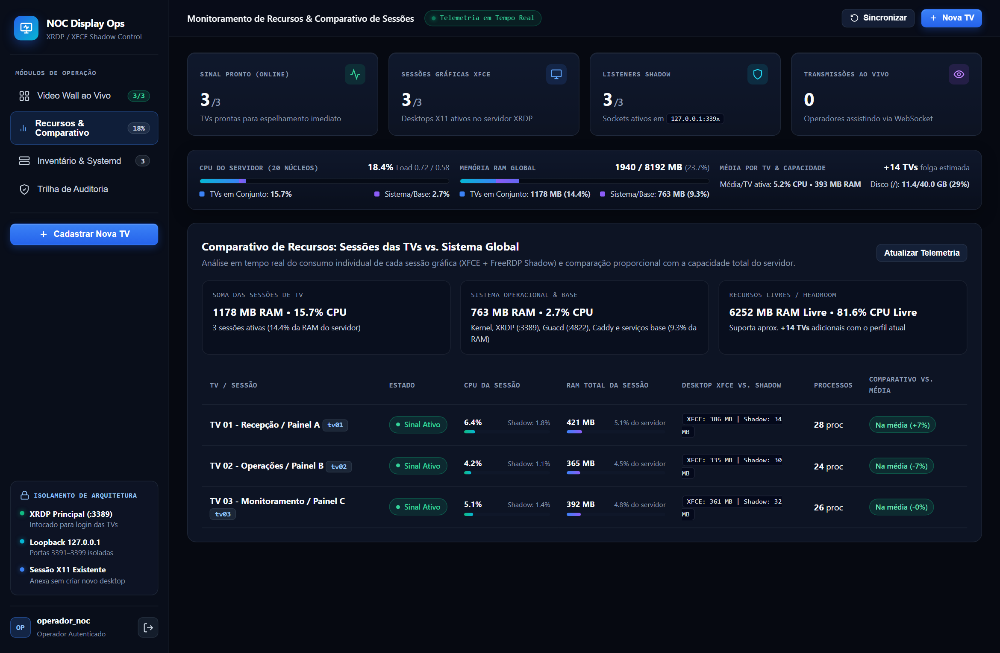
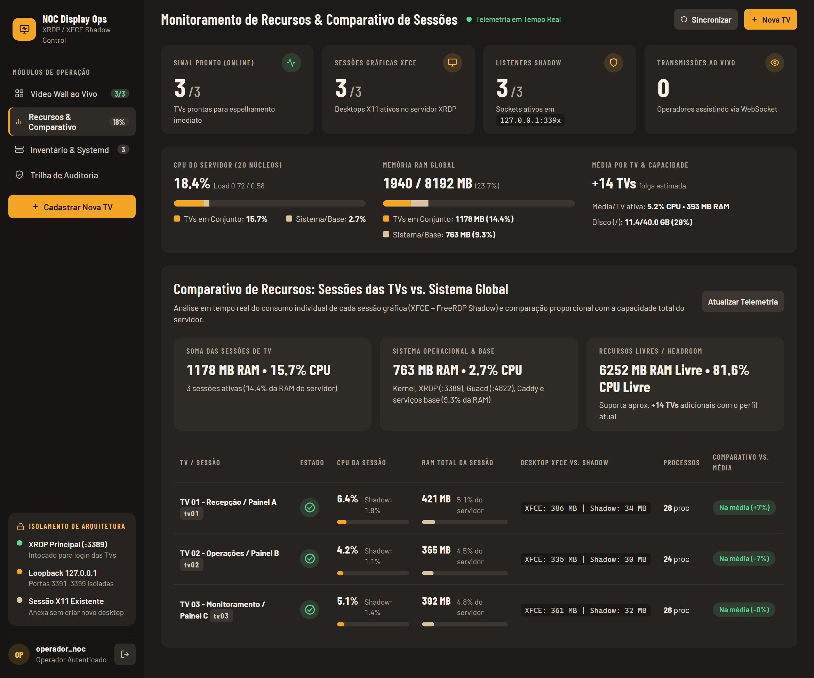
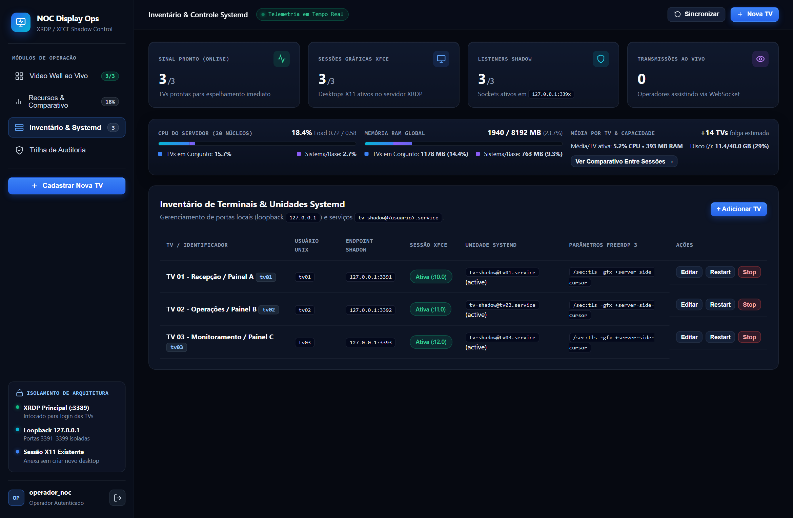
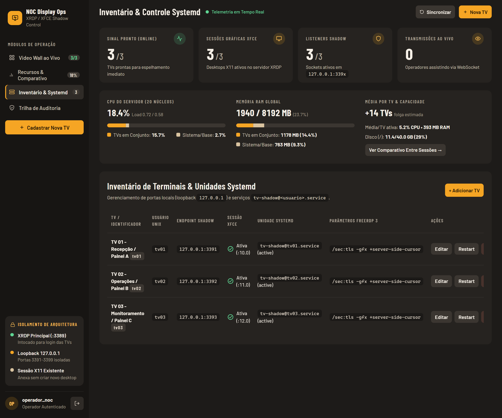
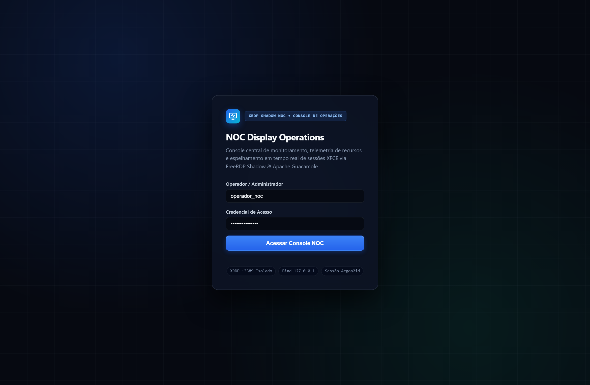
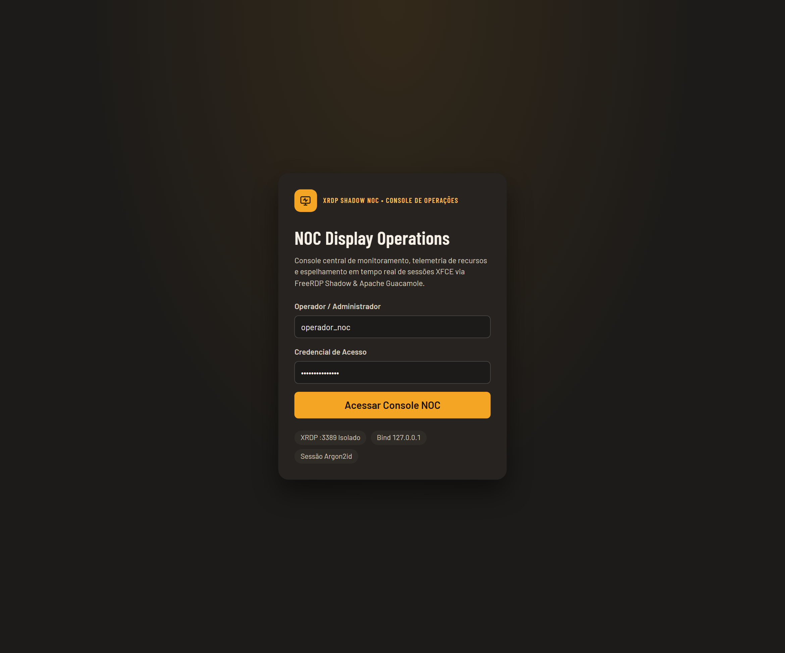

Rebranding: de "dark + neon azul + monospace" para "sala de controle" (grafite quente, âmbar, Barlow). Mesmos dados, mesma funcionalidade, só o visual.








| Critério | Antes | Depois |
|---|---|---|
| Tamanho mínimo de fonte | 67 de 81 declarações abaixo de 14px (mínimo 0.58rem ≈ 9px) | 0 abaixo de 14px. Mínimo medido: 14px (1280), 15,5px (1920), 17,7px (2560). A base cresce com a tela (16→21px) |
| Contraste WCAG AA (4.5:1; 3:1 texto grande) | Não medido; rótulos em cinza-azulado sobre fundos escuros, texto de 9–11px | 0 falhas em todos os textos de todas as telas. Botão primário: texto escuro sobre âmbar |
| Status só por cor (WCAG 1.4.1) | Pontos coloridos de 7px na faixa técnica; pílulas com texto pequeno | Ícone com forma própria (círculo, triângulo, losango) + cor, com aria-label |
| Alvos de toque | Botões xs com ~28px de altura | Mínimo 36px (xs), 40px (sm), 44px (padrão). Único item abaixo de 36px: o checkbox nativo do modal, mas o rótulo clicável tem 44px |
| Hierarquia | Monospace em tudo; rótulos e valores com o mesmo peso | Números em Barlow Condensed 700 (até 3rem), rótulos em caixa-alta 14px, texto em Barlow. Monospace só para comandos |
| Consistência de espaçamento | Dezenas de valores soltos (0.18rem, 0.55rem, 0.85rem…) | Escala única de 7 passos (4/8/12/16/24/32/48px). Resta 1 valor fora da escala, o 0.375rem do raio de chips |
| Bordas | 64 bordas de 1px | 5 (só campos de formulário e separadores de tabela) |
| Fontes | Pediam Google Fonts, mas o CSP do backend bloqueava, então caía no fallback | Barlow e Barlow Condensed empacotadas no build (@fontsource), sem rede externa |